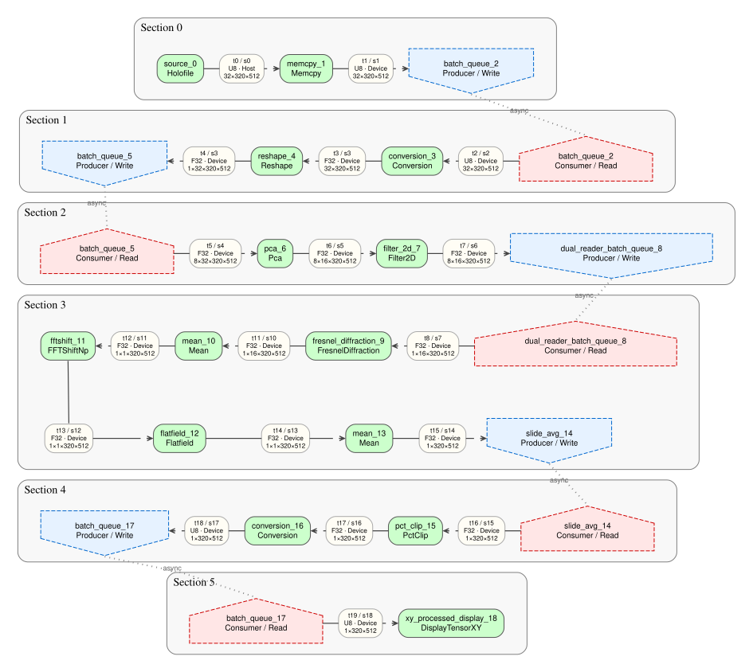

A graph backend for scientific pipelines
Describe the computation as connected tasks. Holoflow compiles the graph, manages tensor lifetimes and memory, then schedules CPU and GPU work while the algorithm remains readable.1
Understand the runtime